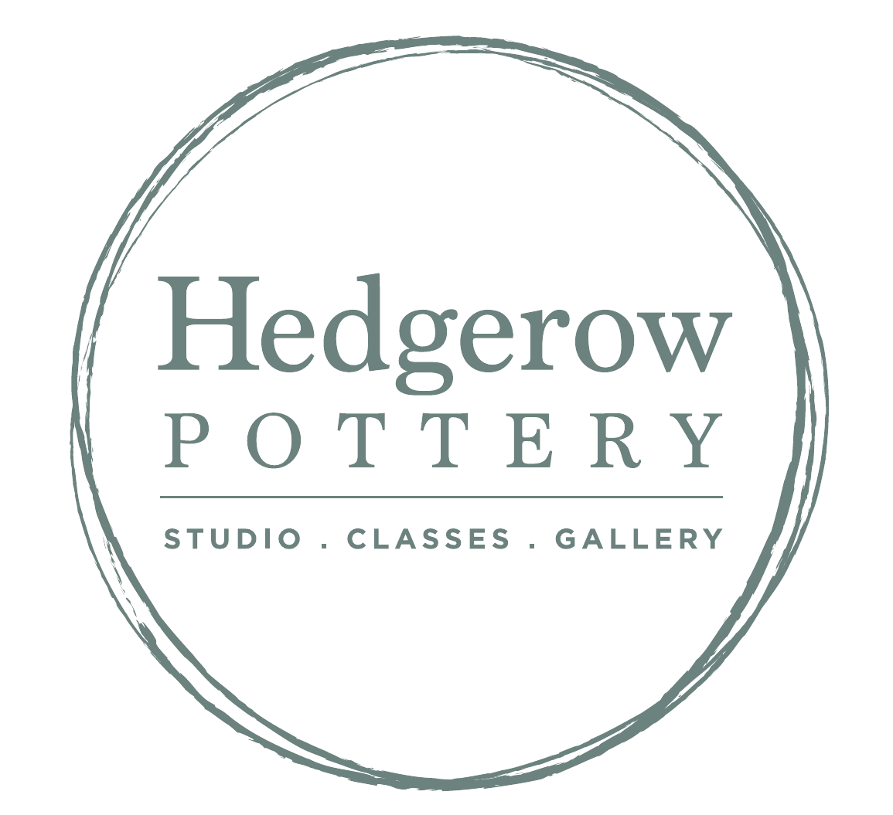
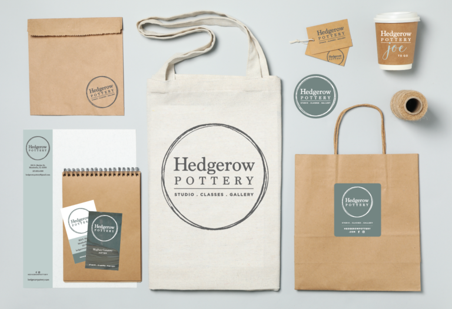
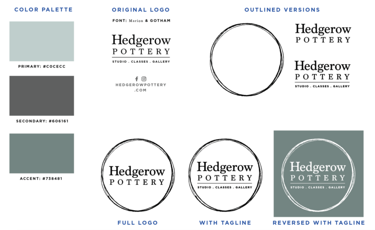
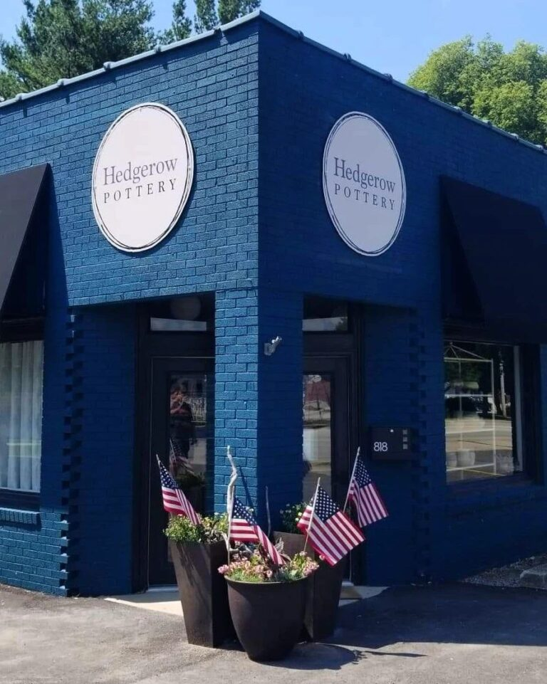

Hedgerow Pottery · Identity System & Brand Expansion
Hedgerow Pottery Identity Expansion
Expanding a single low-resolution logo into a production-ready identity system with accessible standards, flexible assets, and practical guidance for long-term use.
Overview
Hedgerow Pottery had a recognizable mark, but only as a small, low-resolution file as many small-businesses do. That created practical barriers across signage, print, apparel, digital use, and vendor handoffs.
I expanded the logo into a production-ready identity system with accessible color choices, flexible logo variations, usage guidance, and educational materials that helped the client apply the brand consistently without ongoing design support.
Challenge
The issue was not simply visual polish. The brand depended on a single fragile asset that could not support the business's next stage of growth.
The client needed files, standards, and guidance that would make the identity usable across real-world applications.
- Low-resolution source file
- Poor scalability for signage and print
- Readability concerns at small sizes
- Limited contrast and accessibility risks
- No usage standards or vendor-ready assets
From a fragile mark to a flexible logo system.
Old logo
Hard to see and weak at small sizes.
New logo

Clearer hierarchy, spacing, and alignment for a logo system that can scale.
Approach
I treated the project as an enablement problem, not just a design problem. The goal was to create a practical system the client could understand, reuse, and hand off to vendors with confidence.
The work focused on creating reusable assets, repeatable standards, accessible design choices, and production-ready files that would allow the brand to remain consistent across digital and physical environments.
- Rebuilt the logo as vector artwork
- Created logo variations for different contexts
- Improved contrast, readability, and simplified usage
- Built a lightweight brand guide
- Prepared production-ready files
- Added client education for vendor and file-format decisions

System Components
The logo was rebuilt as a professional vector graphic, eliminating quality limitations and allowing the brand to scale without degradation.
A family of supporting assets gave the client options for different contexts while preserving a consistent visual identity.
- Primary and secondary logo configurations
- Horizontal and vertical layouts
- Simplified mark variations
- Single-color and high-contrast versions
- Color and typography guidance
- File formats for print, signage, apparel, web, and social use
- Usage examples and vendor handoff guidance

Accessibility & Usability
Accessibility was addressed through practical identity decisions including stronger contrast and reduced reliance on small descriptive text. Usability was enhanced through simplified marks for constrained spaces and alternate versions for different backgrounds.
These choices made the brand easier to read, reproduce, and apply consistently across environments.
Client Enablement
Many small businesses run into friction when working with printers, vendors, and production partners because the technical requirements for files and formats are not always obvious.
To reduce that friction, I provided practical education on vector versus raster graphics, print production requirements, signage specifications, digital asset usage, and appropriate file formats for different scenarios.
The goal was to give the client a toolkit they could use independently, not a set of assets that still required constant translation.
Outcomes
The project gave the client a durable identity toolkit instead of a single-use logo file. The business could now produce signage, apparel, marketing materials, and digital assets without quality loss, repeated reinvention or additional cost.
- Production-ready asset library
- More consistent brand application
- Improved readability and contrast
- Easier vendor collaboration
- Less dependence on ad hoc design decisions
- A brand foundation that could scale with the business

My Role
Strategy & Systems
- Brand system development
- Visual identity expansion
- Standards creation
- Asset governance
Design
- Graphic design
- Logo development
- Visual systems
- Production asset preparation
Accessibility
- Color contrast review
- Readability improvements
- Inclusive design considerations
Enablement
- Brand documentation
- Vendor guidance
- File preparation
- Design education
Key Takeaway
This project reflects a reoccuring theme in my work: I build systems that make good decisions easier to repeat.
Good systems create flexibility.
Whether the context is a small business identity, a university design system, an accessibility program, or a training framework, the work often begins the same way: identify where expertise is trapped, fragile, or inconsistent, then turn it into reusable assets, clear standards, and practical guidance.
The result is scalable capability, not just a finished deliverable.